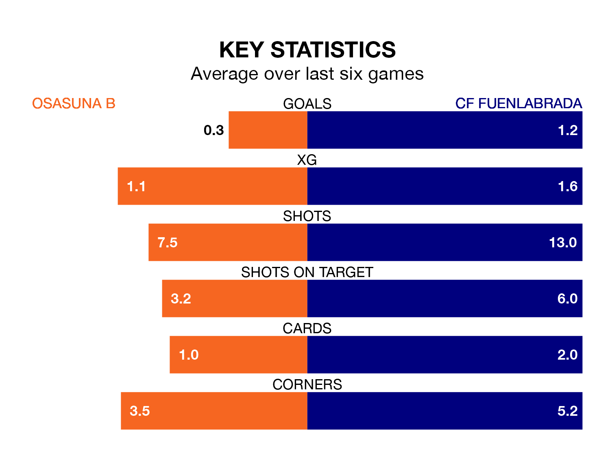

Osasuna B face CF Fuenlabrada at Instalaciones Deportivas de Tajonar on late Sunday looking to secure a first win in nine Primera Division RFEF Group 1 games.
Osasuna B have lost three and drawn five matches since they last earned three points – against SD Logroñés on January 4.
They face a Fuenlabrada side who have won two and drawn three over that time.
In Ander Yoldi Aizagar, Osasuna B have one of the league's most on-form strikers so far this season. He has notched eight goals in 23 appearances, to sit second in the scoring charts.
His goal rate of one every 226 minutes is quicker than that of Fernando Ruiz Izaguirre, Fuenlabrada's top scorer with a goal every 395 minutes, and a total of five goals in 23 games.
With 30 goals in 26 games so far this season, the hosts are scoring more than average in the league with 1.2 goals per game. But they are conceding more than average too, letting in 34 goals at a rate of 1.3 per game.
The away side, meanwhile, are average scorers, with 1.0 goal per game. They have also conceded 1.0 goal per game.
Osasuna B are 14th in the table after 26 games, of which they have won seven and drawn nine, earning 30 points.
Fuenlabrada are three places ahead of Osasuna B in 11th, with eight wins and 10 draws putting them on 34 points.
Osasuna B's last match was on March 2, a 0-0 draw against UE Cornellà.
Fuenlabrada beat SD Ponferradina 2-1 last time out, also on March 2, with Raúl Hernández Grados and Sergio Benito Crujera on the scoresheet.
Updated: 09:34 (UTC), 08/03/24